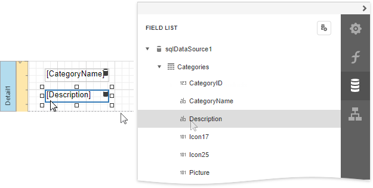
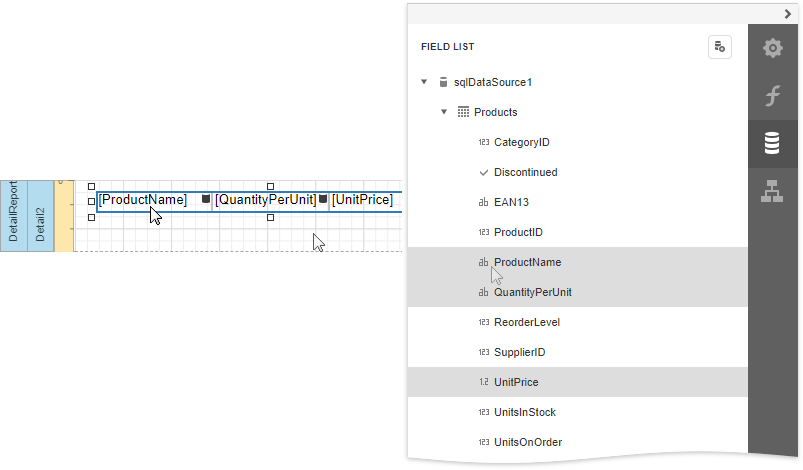
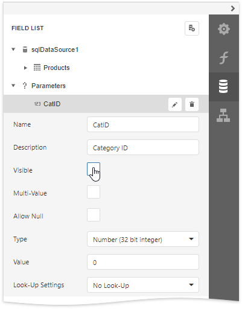
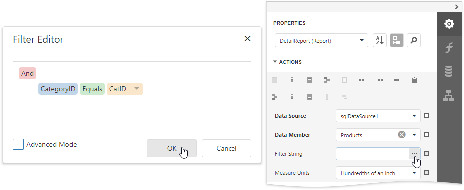
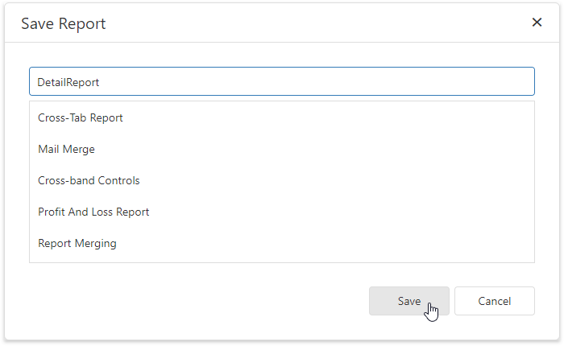
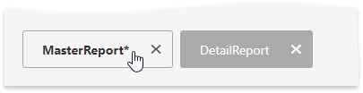
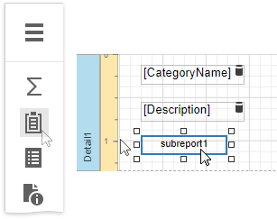
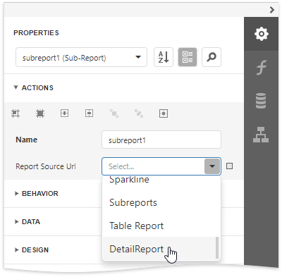
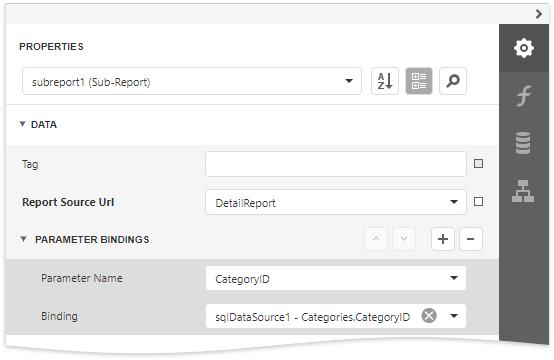

Master-Detail Reports with Subreports
This tutorial demonstrates how to create a master-detail report using the Subreport control. This approach is useful if your data source does not contain master-detail relationship or you prefer to store master and detail reports in different files. Another approach is described at Create a Master-Detail Report (Use Detail Report Bands).

Create a Master Report
Create a new report or open an existing one to use it as a master report.
Bind the report to a required data table.
Drop the required data fields from the Field List onto the Detail band.

Create the Detail Report
Add one more blank report to use it as a detail report.
Bind it to data. For instance, use another table of the same database as for the master report.
Switch to the Field List, select the data fields while holding down CTRL or SHIFT and drag-and-drop them onto the Detail band.

Add parameter to the detail report. Select the Parameters section in the Field List and click Add parameter.

Click the Edit button for the created parameter and specify the parameter's Name and Type as well as disable the Visible property.

Switch to the Properties panel, expand the the control's Tasks category and click the Filter String property's ellipsis button.
In the invoked Filter Editor, construct an expression where the required data field is compared to the created parameter. To access the parameter, invoke the drop-down list on the right and select Parameter.

Click Save | Save As in the designer menu to save the detail report to the server-side report storage. In the invoked standard Save dialog, specify the folder and file name.

Embed the Subreport
Click the corresponding tab in the bottom left corner of the Design Surface to switch back to the master report.

Drop the Subreport control from the Toolbox onto the Detail band.

Expand the Subreport Tasks category and select the previously saved detail report in the Report Source URL property's drop-down list.

You can double-click the added subreport to open the detail report.
Bind the subreport's parameter used as a filter criterion to the master report's corresponding data field, which serve as a source of the parameter value. To do this, expand the Data category, select the Parameter Bindings section and add a new parameter binding. In the binding properties list, specify the data field to which you want to bind a subreport parameter and the name of the parameter that you want to bind.

Customize the report's appearance and format values.
Switch to Print Preview to see the resulting report.